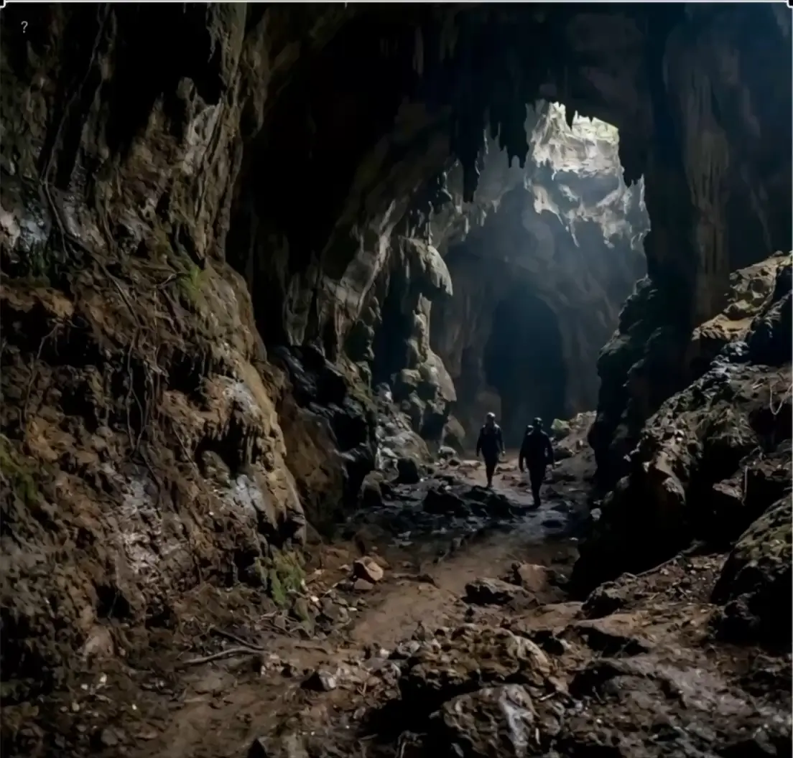
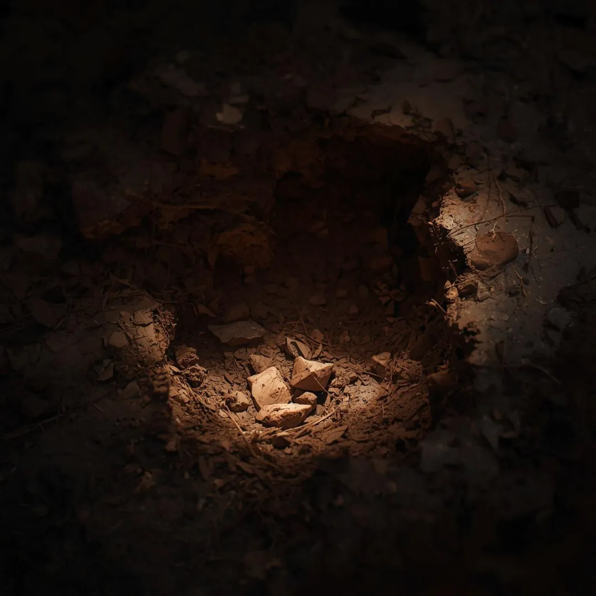
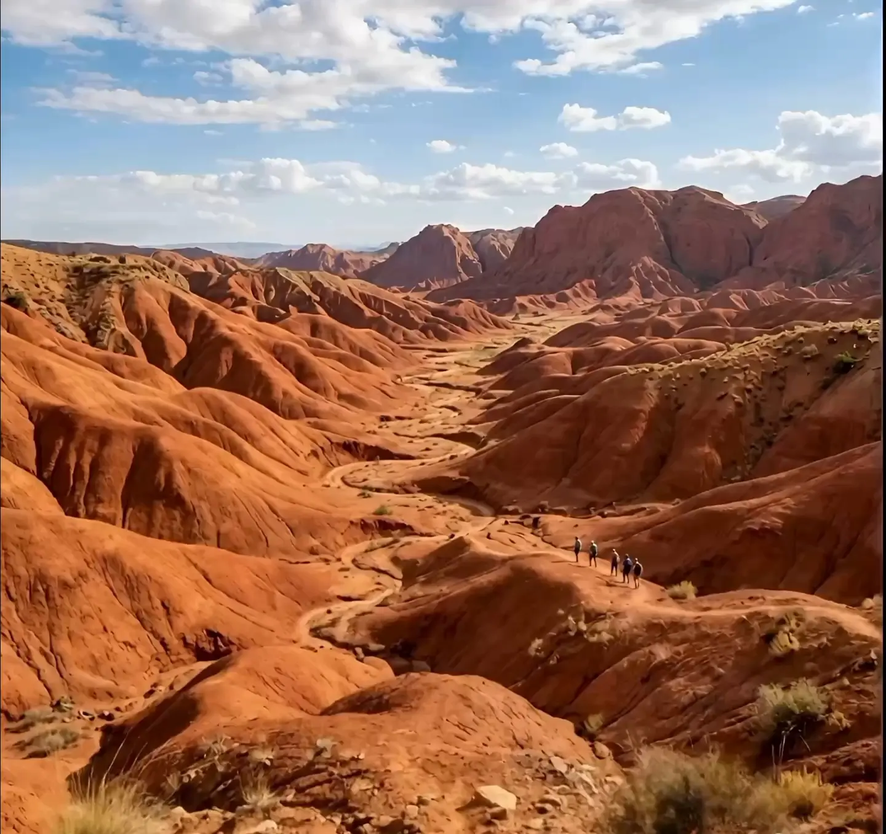
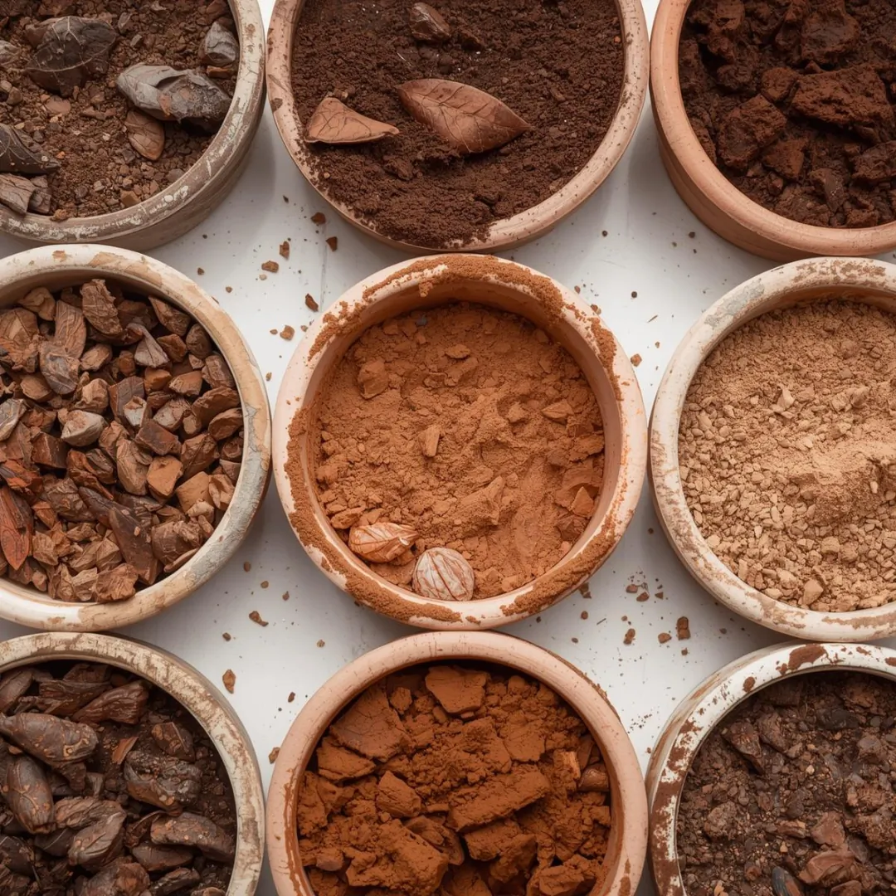
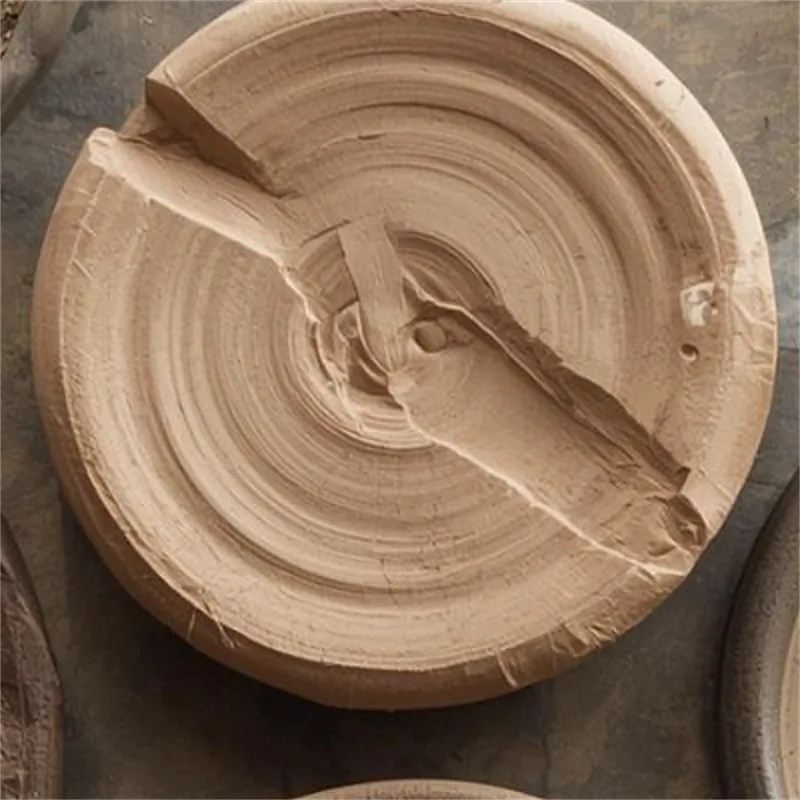
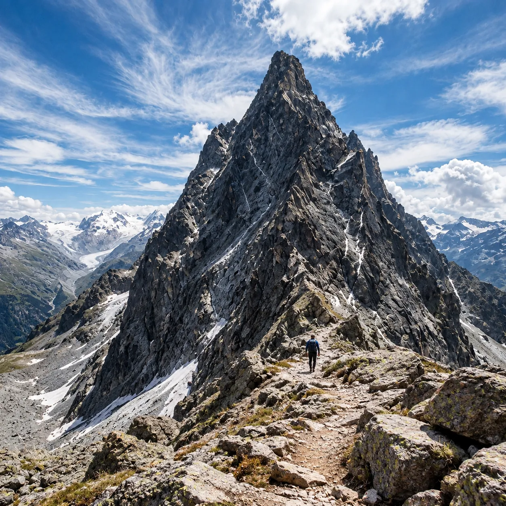
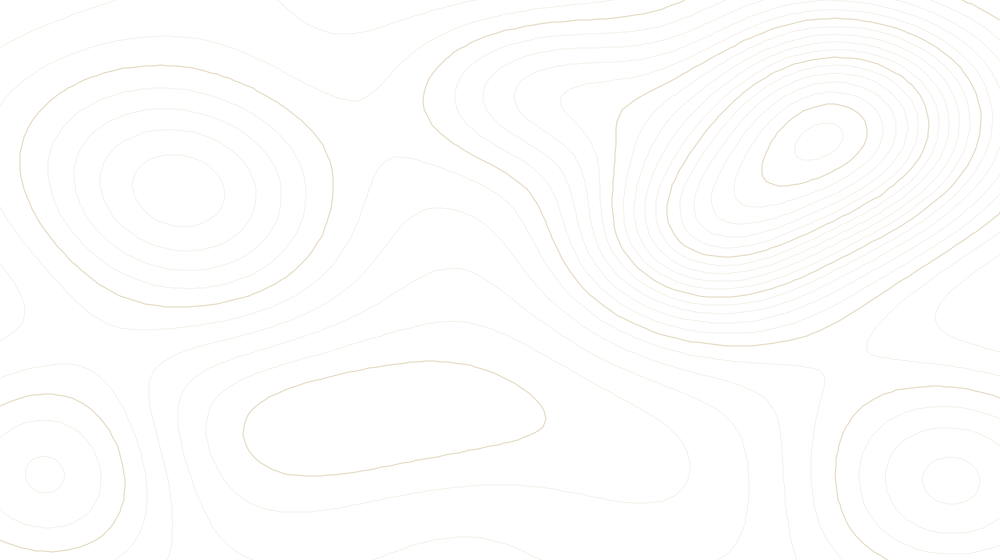
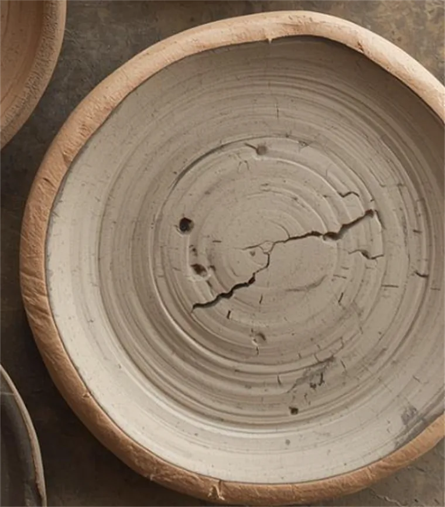

MudPies / The Process
The Craft of Soil
An account of the eleven-day expedition by which the studio’s material is found, carried, formed and cured. In seven stages.
I — Descent
The Deep Earth
We begin in the darkness. The cave mouth sits at 1,180 metres; the material we want lies two hundred metres beneath it, in a bed the studio found by accident and has visited, carefully, ever since.
I — Descent, continued
Beneath the Surface
The walls change as we go down: limestone, then a seam of grey clay, then a band of rust-coloured earth that stains the hands for days. Every layer carries its own texture, weight and history. We take notes on all of them and samples from almost none.
The third chamber · Alt 968 m
Lamps Dimmed
Past the third chamber the air cools and the floor softens underfoot. Lamps are dimmed here and voices lowered. This is not ceremony. The ceiling is low and the acoustics are unforgiving.

II — The Find
Bed 4
The deposit is small, roughly the size of a dining table, and has yielded material for every collection since the second. It is approached on the knees. Earth is lifted by hand and with a single wooden trowel, never more than four kilograms per person, and wrapped in linen for the climb.
- Bed
- 4, third chamber
- Grid
- 14-C
- Depth
- 0.62 m
- Moisture
- 31%
- Air
- 9 °C, still
- Colour
- 2.5YR 4/6
- Yield
- 18.2 kg
- Surface0 m
- Topsoil0–0.3 m
- Leaf mould0.3–0.9 m
- Grey clay0.9–4 m
- Ferric band4–38 m
- Limestone38–212 m
- Bed 4212 m
Returning to the surface
We walk upon our past — soft, cool ground.

III — The Crossing
The Red Country
From the cave the material is carried east, across a country of red, folded hills where nothing grows above the knee. The walk takes four days. Bags are never set down on the ground; the earth here would like its relatives back.
Day three
On the third day the walking stops being a way of getting somewhere and becomes the work itself.
A great and grounding shift.
IV — The Library
Nine earths
At the studio the material is dried, broken by hand, sieved three times and sorted into nine earths, each named for where it was found and how it behaves under the thumb. Select a bowl to read its entry.

- E-01
Hollow Loam
Lower Hollow. Dark, open, full of last year’s leaves. Forgiving under the thumb.
- E-02
Understorey
Forest floor above the cave mouth. Fine and cool, faintly sweet-smelling. Holds an edge.
- E-03
Deep Umber
Bed 4, third chamber. Dense and clodded; stains for days. The studio’s principal earth.
- E-04
Scree Red
Talus below the col. Angular, ferric, loud. Used sparingly, as punctuation.
- E-05
Valley Red
The Red Country, day three. A powder so fine it travels on its own. Binds well, cracks beautifully.
- E-06
Pale Ochre
Dry riverbed, eastern valley. Granular and sun-coloured. Takes a raked line better than any other earth.
- E-07
Husk
Beneath the windbreak. Not strictly earth. Admitted to the library after a long discussion.
- E-08
Brick Clay
The bank where the valley narrows. Plastic, heavy, slow to dry. Used for rims and resolve.
- E-09
Cave Floor
Between the second and third chambers. Grey, mixed, mineral. Carries the cold with it.
V — The Forming
One sitting.
Each piece is formed in a single sitting, by a single pair of hands. There are no moulds, no wheels and no second attempts. If the maker stands up, the piece is abandoned and returned to the library — a rule that has made for some very long afternoons.

Protocol for a single piece
- 01SieveThree passes, finest last. Anything that does not pass is thanked and returned.40 min
- 02WetRainwater from the previous season, added by the cupped hand, never poured.10 min
- 03KneadFour hundred turns. Counted aloud, which the studio finds steadying and visitors do not.25 min
- 04PressHeel of the hand, then the thumb. The form is found rather than imposed.30 min
- 05Rake or burnishOne continuous spiral with a wooden comb, or a river stone, depending on the earth’s temperament.20 min – 9 evenings
- 06RestOne night, uncovered, facing east. Nobody checks on it. This is the hardest step.1 night

VI — The Ascent
The Curing Ground
The pieces are carried up unfired and unwrapped, held flat, to a shelf of rock at 2,940 metres. Here the air is thin and dry, the sun arrives early and unobstructed, and nothing is in a hurry. Each piece is turned once a day, at noon, by hand.
- Altitude
- 2,940 m
- Humidity
- 18%
- First light
- 06:12
- Cure
- 9–61 days
- Turned
- Daily, at noon
- Shelter
- None
The air is thin enough to be honest.
The route, in summary
Eleven days, 41 kilometres.
The way out is by foot. So is the way back. The map is drawn from memory and deliberately imprecise; the beds are not for visiting.

- Distance
- 41 km
- Total ascent
- 2,180 m
- Earth carried
- 18.2 kg
- Pieces formed
- 9
- Pieces catalogued
- 7

VII — The Object
The Final Form
What began beneath the surface emerges as something tangible: a refined object carrying the character of the earth it came from.
It is numbered, photographed, recorded in the catalogue and released once. Then the studio sleeps for a week.